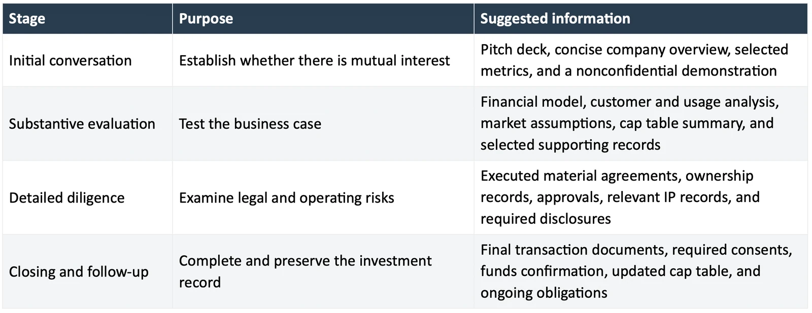
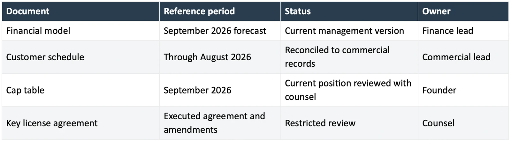

A seed round data room is a controlled collection of documents that helps investors examine a startup's business, financial position, ownership, and material risks. A useful data room makes the evidence behind the pitch easy to find and shares sensitive information according to the investor's role and stage of review.
The number of files is a poor measure of readiness. An investor reviewing a revenue claim needs the relevant customer schedule and explanation. A large folder of unrelated exports makes that task harder.
This seed round data room checklist provides a practical structure, explains what belongs in each section, and suggests when to share it. It focuses on early venture financing, using US document terminology where appropriate. The exact requests depend on the investor, jurisdiction, company, and financing instrument.
What to share during each stage of fundraising
Prepare the underlying records early, then decide how much access each investor needs. Commercial diligence can begin before a term sheet, and legal review may run alongside it. The following stages are suggested access levels rather than a mandatory transaction sequence.

Adapt this approach if an investor needs specific information earlier. A specialist investor may need to examine a technical dependency before deciding whether to proceed. Explain the sensitivity and agree on an appropriate review method.
The seed round data room checklist
Use one index and a small number of clearly named folders. The structure below is a suggested starting point; omit irrelevant categories with an explanation and add sector-specific materials where necessary.
Cooley GO publishes a sample VC due diligence request list covering records investors may request. It is useful for comparing coverage, but the investor's actual request list and the company's circumstances determine what is needed.
00 Start here
Create a short index explaining what each folder contains, the reference date of the materials, who can answer questions, and which items remain outstanding.
Identify the current deck and financial model. Add a glossary for metrics that need explanation. A reviewer should not have to guess whether two files with similar names show different periods or different versions of the same analysis.
If a document does not exist, state why. Distinguish not applicable, not yet prepared, being retrieved, and restricted access. Those statuses mean different things.
01 Company and financing overview
Include the current deck, concise company description, product overview, proposed raise, and intended use of proceeds. Describe the milestone the funding is intended to finance.
State which entity is raising the money and explain material subsidiaries or affiliated arrangements. Include an organization chart when it helps the investor understand where assets, employees, and customer contracts sit.
Keep a short change log if the funding amount or plan evolves. An investor returning after two weeks should be able to see what changed without comparing every slide.
02 Financials and operating plan
Include the historical financial information available for the business, a current cash position, the financial forecast, and the assumptions driving the forecast. Label the accounting basis, reporting period, and audit status.
Add schedules that explain material balances and obligations. Depending on the business, those might include customer receivables, debt, major vendor commitments, or deferred revenue. Have the finance owner determine what is useful and appropriate.
Make the financial model usable. Identify input cells, describe scenarios, and check that opening balances agree with the stated actuals. If you supply a PDF summary first, be prepared to provide a workable model for substantive review.
03 Customers and commercial evidence
Prepare a customer schedule with clear commercial statuses, contract dates, and the metrics used in the pitch. Separate unpaid evaluations from paying customers and explain incomplete observation periods.
Provide the analysis that supports your growth narrative. Depending on the product, this could involve retention cohorts, deployment progress, transaction activity, or repeat purchases. Include the definitions and the source period.
Maintain a material-contract register that identifies key terms and points to executed agreements in the restricted folder. Share customer references only after arranging an appropriate introduction. A company's contact list should not become an unrestricted diligence asset.
04 Ownership and prior financing
Include the current cap table and records supporting the company's financing history. Identify outstanding instruments, relevant side letters, and assumptions used in any modeled conversion.
For a proposed financing, provide a clearly labeled pro forma cap table showing the intended effect of the transaction. Distinguish the factual current position from the modeled future position.
YC's SAFE resources describe how that instrument works. If the company has issued SAFEs or convertible notes, share the actual executed agreements relevant to the review. A summary should not conceal differences between instruments.
05 Corporate records and governance
Organize the entity's current governing documents, relevant board and shareholder actions, and records of material corporate changes. Ask counsel to identify which records are needed and which require correction or explanation.
Preserve executed versions and amendments together. If approval occurred through written consent, make that record findable. Do not substitute a draft for a missing signed document without labeling it clearly.
Keep the preparation issue list separate from the final legal record. An internal note saying an issue is being resolved does not establish that the underlying action was completed.
06 Product and intellectual property
Include a product demonstration, architecture or technical overview appropriate to the investor, and evidence supporting important performance claims. Label future functionality and manual components.
Maintain a schedule of material intellectual property rights and licenses. Identify the people and organizations that contributed essential work and the relevant documentation for those contributions.
Specialist businesses may need an additional restricted folder for technical validation, regulatory correspondence, or research agreements. Explain what the material demonstrates and its limitations. Avoid sharing raw source code, identifiable patient information, or other highly sensitive material in general investor access.
07 Team and material operating commitments
Include leadership biographies, operating responsibilities, and a hiring plan tied to the financial model. Distinguish employees, contractors, advisers, and intended hires.
Prepare relevant employment and contractor records for appropriately restricted review. Provide compensation and commitment summaries where useful, with unnecessary personal information removed.
Add material supplier or partnership commitments that affect delivery. An exclusive dependency on a single provider deserves an explanation of continuity and alternatives.
08 Risks and transaction documents
Create a place for the material issues being discussed and the transaction documents as they develop. Manage access carefully because this material may include sensitive legal and commercial information.
For US priced venture rounds, the NVCA model documents illustrate agreements that may form part of the financing. The company should share drafts and final documents as directed by transaction counsel, rather than assuming every seed round needs the same set.
Do not place privileged legal advice in a general data room without counsel's guidance. Keep final executed documents readily distinguishable from negotiation drafts.
Use a document register that another person can understand
Each important file should have a reference date, an owner, and a clear status. For example:

These are illustrative entries, not claims about a particular company. A filename such as Customer-schedule-2026-08-v2 is more useful than Customers-final-new. Include the current date inside the file as well, since downloads may later be separated from the folder.
Set access according to the information being shared
Use named access, appropriate authentication, and permissions suited to the material. Review access when an investor adds colleagues or advisers, and remove access when it is no longer justified.
Different tools provide different levels of control. Check the actual capabilities of your chosen service, including external sharing, access revocation, audit history, and download permissions. A download restriction cannot prevent every form of copying, so it does not replace judgment about what to disclose.
Before uploading customer or employee information, consider confidentiality obligations, privacy requirements, and whether a summary or redacted document answers the question. Discuss particularly sensitive material with counsel.
Do not treat an NDA as permission to share everything. Conversely, some investors may decline an NDA during early discussions. Start with information appropriate for that stage and agree on a process if deeper review requires confidential material.
Check consistency before granting access
Read the deck, financial model, cap table, and customer schedule together. Look for inconsistent dates, definitions, and assumptions.
For an illustrative example, the deck might show 18 active deployments while a schedule lists 24 customer organizations. The difference could be entirely reasonable: some customers have not launched. Add that explanation and use the correct labels. Leaving the discrepancy unexplained creates unnecessary work for the reviewer.
Keep a question log during diligence. When a response changes an important claim, update the relevant materials and alert the people relying on the earlier version. Preserve the prior record where appropriate.
Frequently asked questions
How many documents should a seed data room contain
There is no universal number. Include the records needed to support the funding case and the requested diligence. The company's history, sector, financing structure, and investor requirements determine the useful scope.
Should founders send the full data room with a cold email
Usually, a concise introduction and a suitable deck provide a better starting point. Grant deeper access when there is substantive interest and a reason to share the information. Adapt the approach to the recipient and sensitivity of the materials.
Can a startup use a shared drive as its data room
Potentially, if the chosen service and plan provide suitable access controls and the company's obligations allow it. Assess the actual configuration and information involved. The name of the tool does not establish that sharing is secure or appropriate.
Should the data room be complete before talking to investors
Prepare core evidence and records before serious outreach. The data room will continue to evolve as investors ask questions and the company develops. Disclose missing items clearly and prioritize material gaps.
Does an organized data room replace investor due diligence
No. It helps investors and advisers conduct their review. They may still request additional records, references, expert analysis, or explanations tailored to their investment decision.
Build the room around the questions investors need answered
Use the transaction readiness checklist to assign the preparation work and the startup due diligence red flags guide to review material gaps.
MatchPlay helps founders prepare for due diligence and investor matching. Apply to MatchPlay to begin the review process.